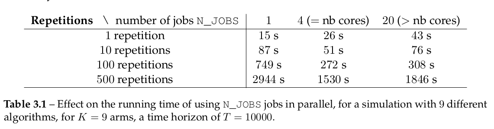

About parallel computations¶
This short page explains quickly we used multi-core computations to speed-up the simulations in SMPyBandits.
Nowadays, parallelism is everywhere in the computational world, and any serious framework for numerical simulations must explore at least one of the three main approaches to (try to) gain performance from parallelism.
For all the different numerical simulations for which SMPyBandits is designed, the setting is the same: we consider a small set of p different problems, of time horizon T that we want to simulate for N independent runs (e.g., p=6, T=10000 and N=100). On the first hand, because of the fundamentally sequential nature of bandit games, each repetition of the simulation must be sequential regarding the time steps t=1,…,T, and so no parallelism can be done to speed up this axis. On the other hand, parallelism can help greatly for the two other axes: if we have a way to run in parallel 4 processes, and we have p=4 problems to simulate, then running a process for each problem directly brings a speed-up factor of 4. Similarly, if we want to run 100 repetitions of the same (random) problem, and we can run 4 processes in parallel, then running 100/4=25 repetitions on each process also bring a speed-up factor of 4.
In this page, we quickly review the chosen approach for SMPyBandits (multi-core on one machine), and we explain why the two other approaches were less appropriate for our study of multi-armed bandit problems.
What we did implement: Joblib for multi-core simulations.¶
The first approach is to use multiple cores of the same machines, and because it is both the simplest and the less financially as well as ecologically costly, this is the approach implemented in SMPyBandits. The machines I had access to during my thesis, either my own laptop or a workstation hosted the SCEE team in CentraleSupélec campus, were equipped with i5 or i7 Intel CPU with 4 or 12 cores.
As explained in the page How_to_run_the_code.html, we implemented in SMPyBandits an easy way to run any simulations on n cores of a machine, using the Joblib library.
It is implemented in a completely transparent way, and if someone uses the command-line variable to configure experiments, using one core or all the cores of the machine one changes N_JOBS=1 to N_JOBS=-1, like in this example.
BAYES=False ARM_TYPE=Bernoulli N=100 T=10000 K=9 N_JOBS=1 \
python3 main.py configuration.py
As long as the number of jobs (N_JOBS here) is less then or equal to the number of physical cores in the CPU of the computer, the final speed-up in terms of total computation runtime is almost optimal.
But jobs are implemented as threads, so the speed-up cannot be more than the number of cores, and using for instance 20 jobs on 4-cores for the 20 repetitions is sub-optimal, as the CPU will essentially spend all its time (and memory) managing the different jobs, and not actually doing the simulations.
Using the above example, we illustrate the effect of using multi-jobs and multi-cores on the time efficiency of simulations using SMPyBandits. We consider three values of N_JOBS, 1 to use only one core and one job, 4 to use all the 4 cores of my i5 Intel CPU, and 20 jobs.
We give in the Table below an example of running time of an experiment with T=1000, and different number of repetitions and number of jobs. It clearly illustrates that using more jobs than the number of CPU is sub-optimal, and that as soon as the number of repetitions is large enough, using one job by available CPU core (\ie, here 4 jobs) gives a significant speed-up time. Due to the cost of orchestrating the different jobs, and memory exchanges at the end of each repetition, the parallel version is \emph{not} 4 times faster, but empirically we always found it to be 2 to 3.5 times faster.
For a simulation with 9 different algorithms, for K=9 arms, a time horizon of T=10000,
we illustrate the effect on the running time of using N_JOBS jobs in parallel.
For different number of repetitions and different number of jobs N_JOBS, for 1, 4 (= nb cores), 20 (> nb cores) jobs:
- 1 repetition: 15 seconds, 26 seconds, 43 seconds
- 10 repetitions: 87 seconds, 51 seconds, 76 seconds
- 100 repetitions: 749 seconds, 272 seconds, 308 seconds
- 500 repetitions: 2944 seconds, 1530 seconds, 1846 seconds
The table above shows the effect on the running time of using N_JOBS jobs in parallel, for a simulation with 9 different algorithms, for K=9 arms, a time horizon of T=10000.
Approaches we did not try¶
The two other approaches we could have consider is parallel computations running on not multiple cores but multiple machines, in a computer cluster, or parallel computations running in a Graphical Processing Unit (GPU).
GPU¶
I did not try to add in SMPyBandits the possibility to run simulations using a GPU, or any general purpose computation libraries offering a GPU-backend. Initially designed for graphical simulations and mainly for video-games applications, the use of GPU for scientific computations have been gaining attention for numerical simulation in the research world since the last 15 years, and NVidia CUDA for GPGPU (General Purpose GPU) started to become popular in 2011. Since 2016, we saw a large press coverage as well as an extensive use in research of deep learning libraries that make general-purpose machine learning algorithms train on the GPU of a user’s laptop or a cluster of GPU. This success is mainly possible because of the heavy parallelism of such training algorithms, and the parallel nature of GPU. To the best of the author knowledge, nobody has tried to implement high performance MAB simulations by using the “parallelism power” of a GPU (at least, no code for such experiments were made public in 2019).
I worked on a GPU, implementing fluid dynamic simulations in an internship in 2012, and I have since then kept a curiosity on how to use GPU-powered libraries and code. I have contributed to and used famous deep-learning libraries, like Theano or Keras, and my limited knowledge on such libraries made me believe that it was not easy to use a GPU for bandit simulations, and most surely it would not have been worth the time.
I would be very curious to understand how a GPU could be used to implement highly efficient simulations for sequential learning problems, because it seemed hard whenever I thought about it.
Large scale cluster¶
I also did not try to use any large scale computer cluster, even if I was aware of the possibility offered by the Grid 5000 project, for instance. It is partly due to time constraint, as I would have been curious to try, but mainly because we found that it would not have helped us much to use a large scale cluster. The main reason is that in the multi-armed bandit and sequential learning literature, most research papers do not even include an experimental section, and for the papers who did take the time to implement and test their proposed algorithms, it is almost done on just a few problems and for short- or medium- duration experiments.
For instance, the papers we consider to be the best ones regarding their empirical sections are Liu & Lee & Shroff, 2017, arXiv:1711.03539 and Cao & Zhen & Kveton & Xie, 2018, arXiv:1802.03692, for piece-wise stationary bandits, and they mainly consider reasonable problems of horizon T=10000 and no more than 1000 independent repetitions. Each paper considers one harder problem, of horizon T=1000000 and less repetitions.
In each article written during my thesis, we included extensive numerical simulations, and even the longest ones (for Besson & Kaufmann, 2019, HAL-02006471) were short enough to run in less than 12 hours on a 12-core workstation, so we could run a few large-scale simulations over night. For such reasons, we prefer to not try to run simulations on a cluster.
Other ideas?¶
And you, dear reader, do you have any idea of a technology I should have tried? If so, please fill an issue on GitHub! Thanks!
📜 License ?  GitHub license¶
GitHub license¶
MIT Licensed (file LICENSE).
© 2016-2018 Lilian Besson.
Open Source? Yes!
 Maintenance
Maintenance
 Ask Me Anything !
Ask Me Anything !
Analytics
 PyPI version
PyPI version
 PyPI implementation
PyPI implementation
 PyPI pyversions
PyPI pyversions
 PyPI download
PyPI download
 PyPI status
PyPI status
Documentation Status
 Build Status
Build Status
Stars of https://github.com/SMPyBandits/SMPyBandits/
Releases of https://github.com/SMPyBandits/SMPyBandits/